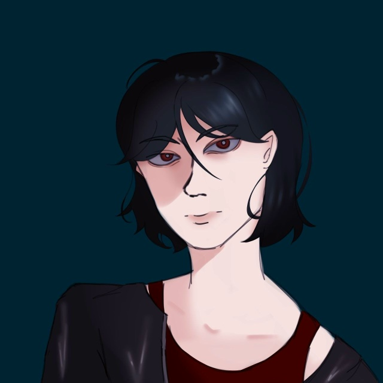
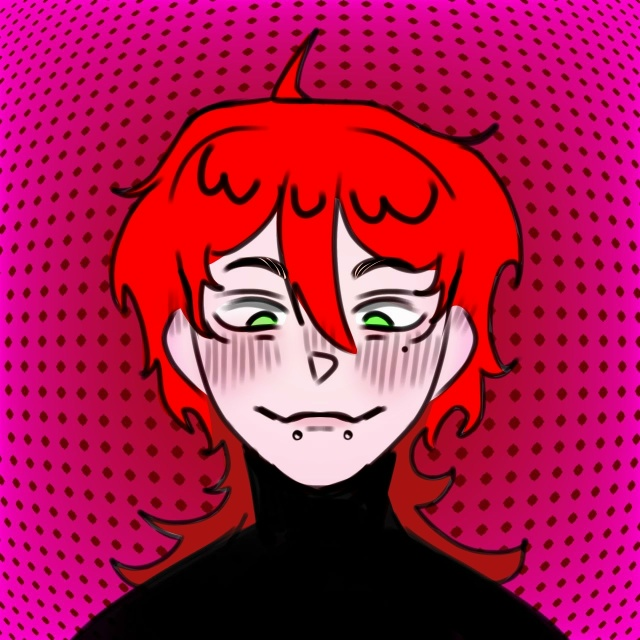

История Шиона и Акито

узнать больше
Имя: Шион
Возраст: 16 лет
Хобби: любил читать, коллекционировать, изучал космос, но после 14 лет забил
Фобии: астрафобия (боязнь грозы)
День рождения: 4 октября (весы)
Любимый цвет: чёрный, серый
Тип личности: INFJ

узнать больше
Имя: Акито
Возраст: 17 лет
Хобби: пытается заниматься тем, что делает Шион, рисует их вместе
Фобии: аутофобия, страх одиночества
День рождения: 10 апреля (овен)
Любимый цвет: красный
Тип личности: ENTP